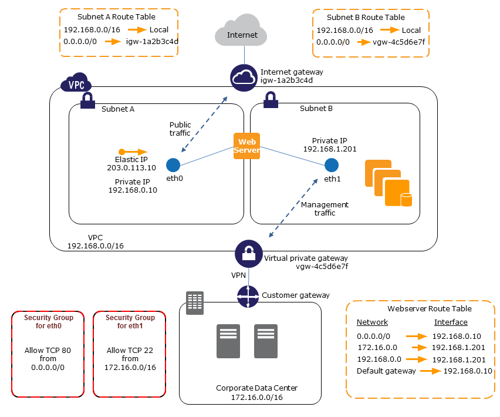

Test Report
Review questions
Jun 17, 2019 04:44AM EDT
 12 correct
12 correctYour answer
B. One instance of a small size and running in the us-east-1a zone of each AWS account will get the benefit of RI pricing
C. Any single instance from all the three accounts can get the benefit of AWS RI pricing if they are running in the same zone and are of the same size
D. If there are more than one instances of a small size running across multiple accounts in the same zone no one will get the benefit of RI
Correct answer is C as with Consolidated billing you can get the benefit of RI purchased by other AWS accounts
Refer AWS documentation - Consolidated billing benefits
For billing purposes, the consolidated billing feature of AWS Organizations treats all the accounts in the organization as one account. This means that all accounts in the organization can receive the hourly cost benefit of Amazon EC2 Reserved Instances purchased by any other account.
Your answer
B. Enable Multi-AZ mode.
C. Place the instance in an Auto Scaling Groups
D. Add an EBS volume and place into RAID 5
E. Increase the size of the EC2 Instance.
E. Increase the size of the EC2 Instance.
Correct answers are A & E as the only option to increase the write throughput is to scale up. Instances can be scaled up either by striping the volumes or by increasing the instance class type
Option B is wrong as Multi AZ is for High Availability and not for scaling
Option C is wrong as database does not work in a scale out mode.
Option D is wrong as RAID 5 is not recommended as it provides parity and EBS volumes are already replicated across multiple servers in an AZ for availability and durability, so AWS recommends striping for performance rather than durability
Your answer
B. Amazon S3
C. Amazon EC2 Instance store
D. Amazon DynamoDB
Correct answer is D as DynamoDB provides a highly scalable, consistent, low latency datastore with a cross region replication ability. It also supports structured data for e.g. JSON documents directly into DynamoDB tables.
Refer AWS documentation - DynamoDB
Amazon DynamoDB is a fast and flexible NoSQL database service for all applications that need consistent, single-digit millisecond latency at any scale. It is a fully managed cloud database and supports both document and key-value store models. Its flexible data model, reliable performance, and automatic scaling of throughput capacity, makes it a great fit for mobile, web, gaming, ad tech, IoT, and many other applications.
Your answer
B. Amazon DynamoDB
C. Amazon CloudFront
D. Amazon Glacier
E. Amazon Simple Queue Service
D. Amazon Glacier
Correct answer are A & D as Storage gateway and Glacier natively encrypts data.
Refer AWS Whitepaper - Securing Data at Rest with Encryption
Your answer
B. Add a scaling-specific cooldown period to the scaling policy
C. Adjust the CPU threshold that triggers a scaling action
D. Attach a new launch configuration to the Auto Scaling group
Correct answer is B as you need to adjust the cool down period for the newly added instance to startup and handle traffic.
Refer AWS documentation - Auto Scaling Cooldowns
The Auto Scaling cooldown period is a configurable setting for your Auto Scaling group that helps to ensure that Auto Scaling doesn't launch or terminate additional instances before the previous scaling activity takes effect. After the Auto Scaling group dynamically scales using a simple scaling policy, Auto Scaling waits for the cooldown period to complete before resuming scaling activities. When you manually scale your Auto Scaling group, the default is not to wait for the cooldown period, but you can override the default and honor the cooldown period. If an instance becomes unhealthy, Auto Scaling does not wait for the cooldown period to complete before replacing the unhealthy instance.
Your answer
B. Use Origin Access Identity with S3
C. Increase the cache expiration time.
D. Create an "invalidation" for all your objects, and recache them.
Correct answer is C as CloudFront allows caching of objects and serving them from edge locations with low latency. The longer the duration, the longer the object is available in the cache and hence reduces the load on the origin.
Refer AWS documentation - CloudFront Expiration
You can control how long your objects stay in a CloudFront cache before CloudFront forwards another request to your origin. Reducing the duration allows you to serve dynamic content. Increasing the duration means your users get better performance because your objects are more likely to be served directly from the edge cache. A longer duration also reduces the load on your origin.
Typically, CloudFront serves an object from an edge location until the cache duration that you specified passes—that is, until the object expires. After it expires, the next time the edge location gets a user request for the object, CloudFront forwards the request to the origin server to verify that the cache contains the latest version of the object.
Option A is wrong as ELB does not help increase performance and would be costly then S3.
Option B is wrong as OAI helps protect the S3 objects from being available to all, with the access being restricted only to CloudFront.
Option D is wrong as Invalidating the cache before it expires is costly as CloudFront would charge for the same.
Your answer
B. Use a hexadecimal hash for the prefix.
C. Use a hexadecimal hash for the suffix.
D. Use a sequential ID for the suffix.
E. Use a date for the suffix.
Correct answer is B as randomness helps distribute the objects across multiple partitions, hence improving the performance.
Refer AWS documentation - S3 Performance
Amazon S3 maintains an index of object key names in each AWS region. Object keys are stored in UTF-8 binary ordering across multiple partitions in the index. The key name dictates which partition the key is stored in. Using a sequential prefix, such as time stamp or an alphabetical sequence, increases the likelihood that Amazon S3 will target a specific partition for a large number of your keys, overwhelming the I/O capacity of the partition. If you introduce some randomness in your key name prefixes, the key names, and therefore the I/O load, will be distributed across more than one partition.
Example 1: Add a Hex Hash Prefix to Key Name
One way to introduce randomness to key names is to add a hash string as prefix to the key name. For example, you can compute an MD5 hash of the character sequence that you plan to assign as the key name. From the hash, pick a specific number of characters, and add them as the prefix to the key name. The following example shows key names with a four-character hash.
Your answer
B. Amazon RDS
C. Amazon EFS
D. Amazon EBS
Correct answer is C as EFS provides a shared file system which can be access from multiple EC2 instances at the same time.
Refer AWS documentation - EFS FAQs
Q. What is Amazon Elastic File System?
Amazon EFS is a fully-managed service that makes it easy to set up and scale file storage in the Amazon Cloud. With a few clicks in the AWS Management Console, you can create file systems that are accessible to Amazon EC2 instances via a file system interface (using standard operating system file I/O APIs) and supports full file system access semantics (such as strong consistency and file locking).
Amazon EFS file systems can automatically scale from gigabytes to petabytes of data without needing to provision storage. Tens, hundreds, or even thousands of Amazon EC2 instances can access an Amazon EFS file system at the same time, and Amazon EFS provides consistent performance to each Amazon EC2 instance. Amazon EFS is designed to be highly durable and highly available. With Amazon EFS, there is no minimum fee or setup costs, and you pay only for the storage you use.
Option A, B are wrong S3 is not a file system
Option D is wrong as EBS cannot be shared across multiple EC2 instances at the same time.
Your answer
B. Cluster endpoint for Amazon Aurora
C. Primary DB instance endpoint for Amazon Aurora
D. Replica DB instances endpoint for Aurora.
Correct answer is A as there are two read replica that need to be load balanced, a Reader endpoint needs to be used.
Refer AWS documentation - Aurora Reader Endpoint
You use the reader endpoint for read-only connections for your Aurora cluster. This endpoint uses a load-balancing mechanism to help your cluster handle a query-intensive workload. The reader endpoint is the endpoint that you supply to applications that do reporting or other read-only operations on the cluster.
The reader endpoint only load-balances connections to available Aurora Replicas in an Aurora DB cluster. It doesn't load-balance individual queries. If you want to load-balance each query to distribute the read workload for a DB cluster, open a new connection to the reader endpoint for each query.
Each Aurora cluster has a single built-in reader endpoint, whose name and other attributes are managed by Aurora. You can't create, delete, or modify this kind of endpoint.
Option B is wrong as Cluster endpoints helps provide a single endpoint to primary and standby instance.
Because each Aurora cluster has a single built-in cluster endpoint, whose name and other attributes are managed by Aurora, you can't create, delete, or modify this kind of endpoint.
You use the cluster endpoint when you administer your cluster, perform extract, transform, load (ETL) operations, or develop and test applications. The cluster endpoint connects to the primary instance of the cluster. The primary instance is the only DB instance where you can create tables and indexes, run INSERT statements, and perform other DDL and DML operations.
Each Aurora cluster has a single built-in cluster endpoint, whose name and other attributes are managed by Aurora. You can't create, delete, or modify this kind of endpoint.
The physical IP address pointed to by the cluster endpoint changes when the failover mechanism promotes a new DB instance to be the read-write primary instance for the cluster. If you use any form of connection pooling or other multiplexing, be prepared to flush or reduce the time-to-live for any cached DNS information. Doing so ensures that you don't try to establish a read-write connection to a DB instance that became unavailable or is now read-only after a failover.
Option C is wrong as primary DB instance does not point to read replicas.
Option D is wrong as Replica DB instance would have individual endpoints and load balancing needs to handled by the application.
Points : 3 out of 3
Your answer
B. Set the retention period of the automated snapshots to 35 days.
C. Choose to use Spot Instances instead of Reserved Instances.
D. Choose to use Instance store volumes to store the cluster data.
Correct answer is A as manual snapshots do not have any retention period and would be retained indefinitely unless deleted.
Refer AWS documentation - Redshift Snapshots
When you enable Amazon Redshift to automatically copy snapshots to another region, you specify the destination region where you want snapshots to be copied. In the case of automated snapshots, you can also specify the retention period that they should be kept in the destination region. After an automated snapshot is copied to the destination region and it reaches the retention time period there, it is deleted from the destination region, keeping your snapshot usage low. You can change this retention period if you need to keep the automated snapshots for a shorter or longer period of time in the destination region.
The retention period that you set for automated snapshots that are copied to the destination region is separate from the retention period for automated snapshots in the source region. The default retention period for copied snapshots is seven days. That seven-day period only applies to automated snapshots. Manual snapshots are not affected by the retention period in either the source or destination regions, and they remain until you manually delete them.
Option B is wrong as automation snapshots have a retention period of 35 days and they are automatically deleted beyond it.
Option B is wrong as spot instances cannot be used for Redshift
Option D is wrong as Redshift needs persistent storage and instance stores are not recommended.
Points : 3 out of 3
Your answer
B. Increase the Auto Scaling Cooldown timer value.
C. Enable the Auto Scaling cross zone balancing feature.
D. Disable CloudWatch alarms till the application stabilizes.
Correct answer is B as Auto Scaling cooldown time helps new instances launched by the auto scaling policy to gear up and start serving traffic, before any other auto scaling policy is implemented.
Refer AWS documentation- Auto Scaling Cooldown
The cooldown period is a configurable setting for your Auto Scaling group that helps to ensure that it doesn't launch or terminate additional instances before the previous scaling activity takes effect. After the Auto Scaling group dynamically scales using a simple scaling policy, it waits for the cooldown period to complete before resuming scaling activities. When you manually scale your Auto Scaling group, the default is not to wait for the cooldown period, but you can override the default and honor the cooldown period. If an instance becomes unhealthy, the Auto Scaling group does not wait for the cooldown period to complete before replacing the unhealthy instance.
Your answer
B. Gateway-Stored volumes with snapshots scheduled to Amazon S3
C. Gateway-Virtual Tape Library with snapshots to Amazon S3
D. Gateway-Virtual Tape Library with snapshots to Amazon Glacier
Key point here is the local storage capacity is constrained and low-latency access to their frequently accessed data
Refer AWS documentation - Gateway Storage
Correct answer is A Gateway Cache Volume
- Cached Volumes – You store your data in Amazon Simple Storage Service (Amazon S3) and retain a copy of frequently accessed data subsets locally. Cached volumes offer a substantial cost savings on primary storage and minimize the need to scale your storage on-premises. You also retain low-latency access to your frequently accessed data.
- Stored Volumes – If you need low-latency access to your entire data set, you can configure your on-premises gateway to store all your data locally and then asynchronously back up point-in-time snapshots of this data to Amazon S3. This configuration provides durable and inexpensive off-site backups that you can recover to your local data center or Amazon EC2. For example, if you need replacement capacity for disaster recovery, you can recover the backups to Amazon EC2.
Points : 3 out of 3
Your answer
B. Verify that all Amazon Simple Storage Service (S3) bucket policies and ACLs correctly implement your security policies.
C. Determine whether unnecessary users and services have been identified on all Amazon-published AMIs.
D. Verify that AWS Trusted Advisor has identified and disabled all unnecessary users and services on your Amazon Elastic Compute Cloud (EC2) instances.
B. Verify that all Amazon Simple Storage Service (S3) bucket policies and ACLs correctly implement your security policies.
Correct answers are A & B as they target security issues with remote administrative access being secured and S3 policies are correctly defined.
Option C is wrong as Amazon published AMIs are Amazon's responsibility
Option D is wrong as Trusted Advisor would help only identify the issues but you need to act on the same.
Your answer
B. Amazon Import/Export, because Amazon assists in migrating large amounts of data to Amazon S3
C. Amazon Glacier, to keep costs low for storage and scale infinitely
D. Amazon S3, because it provides unlimited amounts of storage data, scales automatically, is highly available, and durable
Correct answer is D as S3 would provide an unlimited storage as the demand increases as it is handled by AWS itself.
Refer AWS documentation - S3 FAQs
Amazon S3 provides a simple web service interface that you can use to store and retrieve any amount of data, at any time, from anywhere on the web. Using this web service, developers can easily build applications that make use of Internet storage. Since Amazon S3 is highly scalable and you only pay for what you use, developers can start small and grow their application as they wish, with no compromise on performance or reliability.
Amazon S3 is also designed to be highly flexible. Store any type and amount of data that you want; read the same piece of data a million times or only for emergency disaster recovery; build a simple FTP application, or a sophisticated web application such as the Amazon.com retail web site. Amazon S3 frees developers to focus on innovation, not figuring out how to store their data.
Your answer
B. Amazon RDS
C. Amazon EBS
D. Amazon Redshift
C. Amazon EBS
D. Amazon Redshift
Correct answers are B, C & D as both RDS & Redshift have automated backups.
Refer AWS documentation - RDS FAQs & Redshift FAQs & EBS DLM
Q: Do I need to enable backups for my DB Instance or is it done automatically?
By default, Amazon RDS enables automated backups of your DB Instance with a 7 day retention period.
Q: Do I need to enable backups for my data warehouse cluster or is it done automatically?
By default, Amazon Redshift enables automated backups of your data warehouse cluster with a 1-day retention period.
You can use Amazon Data Lifecycle Manager (Amazon DLM) to automate the creation, retention, and deletion of snapshots taken to back up your Amazon EBS volumes. Automating snapshot management helps you to:
- Protect valuable data by enforcing a regular backup schedule.
- Retain backups as required by auditors or internal compliance.
- Reduce storage costs by deleting outdated backups.
Option A is wrong as S3 has not automated backups feature.
Your answer
B. AWS Simple Workflow
C. AWS Simple Query Service
D. AWS Simple Queue Service
Correct answer is D as SQS allows you to develop durable, distributed and decoupled architectures. Producers and Consumers can be decoupled and they can work on their own handling capacity.
Refer AWS documentation - SQS FAQs
Amazon Simple Queue Service (Amazon SQS) offers reliable, highly-scalable hosted queues for storing messages while they travel between applications or microservices. Amazon SQS lets you move data between distributed application components and helps you decouple these components
Your answer
B. Source and destination buckets must have versioning disabled
C. Source and destination buckets must be in different AWS Regions
D. Source and destination buckets must be in different AWS Regions or different AZs
E. S3 must have permissions to replicate objects from that source bucket to the destination bucket on your behalf
C. Source and destination buckets must be in different AWS Regions
E. S3 must have permissions to replicate objects from that source bucket to the destination bucket on your behalf
Correct answer are A, C & E.
Refer AWS documentation - S3 Cross Region Replication
Requirements for cross-region replication:
- The source and destination buckets must have versioning enabled. For more information about versioning, see Using Versioning.
- The source and destination buckets must be in different AWS Regions. For a list of AWS Regions where you can create a bucket, see Regions and Endpoints in the AWS General Reference.
- Amazon S3 must have permissions to replicate objects from that source bucket to the destination bucket on your behalf.You can grant these permissions by creating an IAM role. For more information about IAM roles, see Create an IAM Role.
- If the source bucket owner also owns the object, the bucket owner has full permissions to replicate the object. If not, the object owner must grant the bucket owner the
READandREAD_ACPpermissions via the object ACL.
Your answer
B. Configuring lifecycle configuration rules on the S3 bucket.
C. Creating an IAM policy for the S3 bucket.
D. Enabling CORS on the S3 bucket.
Correct answer is B as S3 Object Lifecycle management helps automated object transition across storage class and expiration as well.
Refer AWS documentation - S3 Object Lifecycle management
To manage your objects so that they are stored cost effectively throughout their lifecycle, configure their lifecycle. A lifecycle configuration is a set of rules that define actions that Amazon S3 applies to a group of objects. There are two types of actions:
- Transition actions—Define when objects transition to another storage class. For example, you might choose to transition objects to the STANDARD_IA storage class 30 days after you created them, or archive objects to the GLACIER storage class one year after creating them.There are costs associated with the lifecycle transition requests.
- Expiration actions—Define when objects expire. Amazon S3 deletes expired objects on your behalf.The lifecycle expiration costs depend on when you choose to expire objects.
Option A & C are wrong as they allow access control to S3 bucket and objects.
Option D is wrong as CORS is for allowing cross domain calls to the S3 bucket
Your answer
B. Create a secondary ENI that can be moved to a failover instance
C. Use Route53 health checks to fail traffic over to a failover instance
D. Assign a secondary private IP address to the primary ENI that can be moved to a failover instance
D. Assign a secondary private IP address to the primary ENI that can be moved to a failover instance
Correct answers are B & D as the application is legacy and needs hard coded IP address you can use secondary ENI or secondary IP address.
Refer AWS documentation - EC2 using ENI
To ensure failover capabilities, consider using a secondary private IPv4 for incoming traffic on a network interface. In the event of an instance failure, you can move the interface and/or secondary private IPv4 address to a standby instance.

Option A & C are wrong as they would not allow to maintain a fixed hard coded IP address.
Your answer
B. Configure a weighted routing policy.
C. Configure a Multi-answer routing policy.
D. Configure a failover routing policy.
Correct answer is D as Failover routing lets you route traffic to a resource when the resource is healthy or to a different resource when the first resource is unhealthy. The primary and secondary records can route traffic to anything from an Amazon S3 bucket that is configured as a website to a complex tree of records.
Refer AWS documentation - Route 53 Routing Policy
- Simple routing policy – Use for a single resource that performs a given function for your domain, for example, a web server that serves content for the example.com website.
- Failover routing policy – Use when you want to configure active-passive failover.
- Geolocation routing policy – Use when you want to route traffic based on the location of your users.
- Geoproximity routing policy – Use when you want to route traffic based on the location of your resources and, optionally, shift traffic from resources in one location to resources in another.
- Latency routing policy – Use when you have resources in multiple locations and you want to route traffic to the resource that provides the best latency.
- Multivalue answer routing policy – Use when you want Route 53 to respond to DNS queries with up to eight healthy records selected at random.
- Weighted routing policy – Use to route traffic to multiple resources in proportions that you specify.
Your answer
B. Amazon DynamoDB
C. Amazon EC2 Instance Store
D. Amazon SQS
Correct answer is B as DynamoDB provides an ideal option to store user session information and provide scalable low latency access.
Refer AWS Storage Options Whitepaper
DynamoDB is ideal for existing or new applications that need a flexible NoSQL database with low read and write latencies, and the ability to scale storage and throughput up or down as needed without code changes or downtime.
Use cases require a highly available and scalable database because downtime or performance degradation has an immediate negative impact on an organization’s business. for e.g. mobile apps, gaming, digital ad serving, live voting and audience interaction for live events, sensor networks, log ingestion, access control for web-based content, metadata storage for S3 objects, e-commerce shopping carts, and web session management
Your answer
B. enable Delete Protection on the ALB
C. enabled Termination Protection on the ALB
D. ALB does not provide any feature to prevent accidental deletion
Correct answer is B as ALB provides Deletion Protection option, which when enabled. protects ALB from accidental deletion.
Refer AWS documentation - ELB Application Load Balancer
Delete Protection - You can enable deletion protection on an Application Load Balancer to prevent it from being accidentally deleted.
Your answer
B. Create two NAT instances in a public subnet, create a route from the private subnet to each NAT gateway for fault tolerance
C. Create two NAT instances in two separate public subnets, create a route from the private subnet to each NAT gateway for fault tolerance
D. Create two NAT instances in two separate private subnets.
Correct answer is C as for fault tolerance the NAT instances can be hosted in two separate subnets with a route for each private subnet to public subnet.
Option A & B are wrong for fault tolerance the two NAT instances need to be created in separate subnets.
Option D is wrong as NAT instances need to be created in public subnets
Your answer
B. Manage user identification and authorization
C. Store Web content
D. Coordinate synchronous and asynchronous tasks, which are distributed, and fault tolerant.
Correct answer is D
Refer AWS documentation - SWF
Amazon Simple Workflow gives you the ability to build and run distributed, fault-tolerant applications that span multiple systems (cloud-based, on-premise, or both). SWF coordinates the flow of synchronous or asynchronous tasks (logical application steps) so that you can focus on your business and your application instead of having to worry about the infrastructure.
Option B is wrong as IAM does it
Option C is wrong as S3 can do it.
Your answer
B. Security Group Inbound Rule: Protocol – UDP, Port Range – 22, Source 72.34.51.100/32
C. Network ACL Inbound Rule: Protocol – UDP, Port Range – 22, Source 72.34.51.100/32
D. Network ACL Inbound Rule: Protocol – TCP, Port Range-22, Source 72.34.51.100/0
Correct answer is A as for connecting from external network to instances within VPC, the Bastion needs to allow access from 72.34.51.100/32 with TCP on port 22.
Option D is wrong as Network ACL would not work as it would need a outbound rule as well, as NACL are stateless.

Points : 3 out of 3
Your answer
B. Logical security of customer SSH private key material
C. Patching of Amazon Elastic Compute Cloud hypervisors
D. Decommissioning storage devices at end of life
E. Encryption of traffic within a virtual private cloud
F. Access control within a virtual private cloud
C. Patching of Amazon Elastic Compute Cloud hypervisors
D. Decommissioning storage devices at end of life
Correct answers are A, C & D as AWS is responsible for Physical security of AWS data centers, hypervisors and decommissioning of storage devices.
Refer AWS documentation - Shared Responsibility Model
Option B, E and F are wrong as anything with and within the VPC is customer's responsibility like security of keys, VPC, instances and data traffic to VPC and instances.
Your answer
B. You can associate multiple subnets with the same Route Table, but you can't associate a subnet with only one Route Table.
C. You can't associate multiple subnets with the same Route Table.
D. None of these.
Correct answer is A as multiple subnets can be associated with a same Route tables
Refer AWS documentation - VPC Route Tables
A route table contains a set of rules, called routes, that are used to determine where network traffic is directed.
Each subnet in your VPC must be associated with a route table; the table controls the routing for the subnet. A subnet can only be associated with one route table at a time, but you can associate multiple subnets with the same route table.
Points : 3 out of 3
Your answer
B. A CIDR block mask of /25 is the smallest range supported
C. Instances in a private subnet can communicate with the Internet only if they have an Elastic IP.
D. By default, all subnets can route between each other, whether they are private or public
E. Each subnet spans at least 2 Availability zones to provide a high-availability environment
D. By default, all subnets can route between each other, whether they are private or public
Correct answer are A & D as each subnet span within a single AZ and can route traffic between each other.
Refer AWS documentation - VPC Subnets & VPC Route Tables
Every route table contains a local route for communication within the VPC over IPv4.
When you create a VPC, it spans all the Availability Zones in the region. After creating a VPC, you can add one or more subnets in each Availability Zone. When you create a subnet, you specify the CIDR block for the subnet, which is a subset of the VPC CIDR block. Each subnet must reside entirely within one Availability Zone and cannot span zones. Availability Zones are distinct locations that are engineered to be isolated from failures in other Availability Zones. By launching instances in separate Availability Zones, you can protect your applications from the failure of a single location. We assign a unique ID to each subnet.
Option B is wrong as /28 is the smallest.
You can assign a single CIDR block to a VPC. The allowed block size is between a /16 netmask and /28 netmask
Option C is wrong as instances can communicate with themselves.
Option E is wrong as a subnet spans a single AZ only
Your answer
B. Incrementally
C. EBS snapshots are not stored in the Amazon S3
D. Decrementally
Correct answer is B as EBS snapshots are incremental
Refer AWS documentation - Create EBS Snapshot
A point-in-time snapshot of an EBS volume, can be used as a baseline for new volumes or for data backup. If you make periodic snapshots of a volume, the snapshots are incremental—only the blocks on the device that have changed after your last snapshot are saved in the new snapshot. Even though snapshots are saved incrementally, the snapshot deletion process is designed so that you need to retain only the most recent snapshot in order to restore the entire volume.
Your answer
B. Restore by implementing a lifecycle policy on the Amazon S3 bucket.
C. Make an Amazon Glacier Restore API call to load the files into another Amazon S3 bucket within four to six hours.
D. Launch a new AWS Storage Gateway instance AMI in Amazon EC2, and restore from a gateway snapshot.
E. Create an Amazon EBS volume from a gateway snapshot, and mount it to an Amazon EC2instance
F. Launch an AWS Storage Gateway virtual iSCSI device at the branch office, and restore from a gateway snapshot
E. Create an Amazon EBS volume from a gateway snapshot, and mount it to an Amazon EC2instance
F. Launch an AWS Storage Gateway virtual iSCSI device at the branch office, and restore from a gateway snapshot
Correct answer are D, E & F as Storage Gateway volumes are only accessible from the AWS Storage Gateway and cannot be directly accessed using Amazon S3 APIs.
Refer AWS documentation - Storage Gateway FAQs
Your answer
B. Create a pre-signed URL for each profile which will last for a week’s duration.
C. Create an S3 bucket policy to provide access for a week’s duration.
D. Create an IAM role to provide access for a week’s duration.
Correct answer is B as S3 allows creating pre-signed urls with limited access for a limited period for users to upload objects to an S3 bucket.
Refer AWS documentation - S3 Upload Object with PreSigned URL
A pre-signed URL gives you access to the object identified in the URL, provided that the creator of the pre-signed URL has permissions to access that object. That is, if you receive a pre-signed URL to upload an object, you can upload the object only if the creator of the pre-signed URL has the necessary permissions to upload that object.
All objects and buckets by default are private. The pre-signed URLs are useful if you want your user/customer to be able to upload a specific object to your bucket, but you don't require them to have AWS security credentials or permissions. When you create a pre-signed URL, you must provide your security credentials and then specify a bucket name, an object key, an HTTP method (PUT for uploading objects), and an expiration date and time. The pre-signed URLs are valid only for the specified duration
Your answer
B. Using network ACLs, you can deny access from a specific IP range
C. Keep network ACL rules simple and use a security group to restrict application level access
D. NACLs are associated with a single Availability Zone
C. Keep network ACL rules simple and use a security group to restrict application level access
Correct answer are B & C as NACLs allow you to define Deny rules and Application level access is better controlled using Security groups.
Refer AWS documentation - VPC NACLs
Option A is wrong as NACLs are stateless and outbound is not allowed and needs to be defined explicitly.
Option D is wrong as NACLs are associated with Subnet
Your answer
B. HTTPS
C. SFTP
D. FTPS
Correct answer is B as S3 allows encryption of data in transit using HTTPS.
Refer AWS documentation - S3 FAQs
Q: How secure is my data in Amazon S3?
Amazon S3 is secure by default. Upon creation, only the resource owners have access to Amazon S3 resources they create. Amazon S3 supports user authentication to control access to data. You can use access control mechanisms such as bucket policies and Access Control Lists (ACLs) to selectively grant permissions to users and groups of users. The Amazon S3 console highlights your publicly accessible buckets, indicates the source of public accessibility, and also warns you if changes to your bucket policies or bucket ACLs would make your bucket publicly accessible.
You can securely upload/download your data to Amazon S3 via SSL endpoints using the HTTPS protocol. If you need extra security you can use the Server-Side Encryption (SSE) option to encrypt data stored at rest. You can configure your Amazon S3 buckets to automatically encrypt objects before storing them if the incoming storage requests do not have any encryption information. Alternatively, you can use your own encryption libraries to encrypt data before storing it in Amazon S3.
Your answer
B. Elastic Load Balancing, Amazon RDS with Multi-AZ, and Amazon S3
C. Amazon RDS with Multi-AZ and Auto Scaling
D. Amazon EC2, Amazon DynamoDB, and Amazon S3
Correct answer is A as the question targets only enabling an elastic and scalable web tier, which can be achieved using ELB, Auto Scaling and EC2 instances.
Option B & C are wrong as RDS is not needed.
Option D is wrong as DynamoDB is not needed. Also need to scale EC2 instances. S3 would be useful only for static sites.
Points : 3 out of 3
Your answer
B. Use instance storage to save session state.
C. Use EBS to save session state.
D. Use ElastiCache to save session state.
E. Use Glacier to save session slate.
Correct answer is D as the reason for the user having to login in the application again. This might be cause the sticky session is lost due to the EC2 instance going down and being served by an another instance. Solution is to make the application stateless by storing session information externally like ElastiCache, DynamoDB or even RDS. Other options are not suitable for storing session state.
Your answer
B. EBS snapshots can be created in real-time without stopping an EC2 instance
C. EBS snapshots can only be restored to an EBS volume of the same size or smaller
D. EBS snapshots can only be restored and mounted to an instance in the same Availability Zone as the original EBS volume
B. EBS snapshots can be created in real-time without stopping an EC2 instance
Correct answers are A & B as EBS snapshots are incremental and Snapshot can be taken real time however it will not be consistent and the recommended way is to stop or freeze the IO
Option C is wrong as EBS snapshots can only be restored to an EBS volume with same or larger size.
Refer AWS documentation - EBS restoring volume
If you specify both a volume size and a snapshot ID, the size must be equal to or greater than the snapshot size.
Option D is wrong as Snapshots are specific to Region and can be used to create a volume in any AZ and does not depend on the original EBS volume AZ
Your answer
B. Managing web sessions
C. Storing JSON documents
D. Storing metadata for Amazon S3 objects
E. Running relational joins and complex updates.
F. Storing large amounts of infrequently accessed data.
C. Storing JSON documents
D. Storing metadata for Amazon S3 objects
Correct answer are B, C and D.
Amazon DynamoDB is a fast and flexible NoSQL database service for all applications that need consistent, single-digit millisecond latency at any scale. It is a fully managed cloud database and supports both document and key-value store models. Its flexible data model and reliable performance make it a great fit for mobile, web, gaming, ad tech, IoT, and many other applications.
Option A is wrong as S3 is best suited for blob storage
Option E is wrong as RDS is best suited for relation join and complex queries
While Amazon DynamoDB tackles the core problems of database scalability, management, performance, and reliability, it does not have all the functionality of a relational database. It does not support complex relational queries (e.g. joins) or complex transactions. If your workload requires this functionality, or you are looking for compatibility with an existing relational engine, you may wish to run a relational engine on Amazon RDS or Amazon EC2
Option F is wrong as S3 or Glacier are best suited.
Your answer
B. DynamoDB
C. Elastic Load Balancing
D. ElastiCache
E. Storage Gateway
D. ElastiCache
Correct answer are B & D as DynamoDB and ElastiCache serve best to store user session data and provide high performance key-value storage.
Refer AWS Whitepaper - Architecting for the Cloud: AWS Best Practices
Option A is wrong as CloudWatch is a monitoring service
Option C is wrong as ELB is a load balancing service
Option E is wrong as Storage Gateway is a storage service, but it is a hybrid storage service that enables on-premises applications to use cloud storage.
Your answer
B. Create individual IAM users
C. Keep rotating your secure access credentials at regular intervals
D. Create strong access key and secret access key and attach to the root account
Correct answer is D as you should never use root account, except for billing. Best practice is to create a Admin account and generate access keys only if needed.
Refer AWS documentation - IAM Best Practices
- Lock Away Your AWS Account (Root) Access Keys
- Create Individual IAM Users
- Use AWS Defined Policies to Assign Permissions Whenever Possible
- Use Groups to Assign Permissions to IAM Users
- Grant Least Privilege
- Use Access Levels to Review IAM Permissions
- Configure a Strong Password Policy for Your Users
- Enable MFA for Privileged Users
- Use Roles for Applications That Run on Amazon EC2 Instances
- Delegate by Using Roles Instead of by Sharing Credentials
- Rotate Credentials Regularly
- Remove Unnecessary Credentials
- Use Policy Conditions for Extra Security
- Monitor Activity in Your AWS Account
- Video Presentation About IAM Best Practices
Your answer
B. Establish a hardware VPN over the internet between VPC-1 and the on-premises network
C. Establish a new AWS Direct Connect connection and private virtual interface in the same region as VPC-2
D. Establish a new AWS Direct Connect connection and private virtual interface in a different AWS region than VPC-1.
E. Establish a new AWS Direct Connect connection and private virtual interface in the same AWS region as VPC-1
E. Establish a new AWS Direct Connect connection and private virtual interface in the same AWS region as VPC-1
Key point here is to provide fault tolerance.
Correct Answer is B & E as Direct Connect connections are not redundant and you need to provide fault tolerance either by setting up a second Direct Connect connection or using VPN. Also, the connection should be to the same VPC as even though the VPC are peered, you cannot connect from one VPC to other.
Option A is wrong as Peered VPC does not support Edge to Edge Routing
Option C is wrong as Peered VPC does not support Edge to Edge Routing
Option D is wrong as need to be in the same region as VPC-1
Your answer
B. Create an "Images" DynamoDB tablee to store the Image with a foreign key constraint to the "Product" table
C. Add an image data type to the "Product" tablee to store the images in binary format
D. Store the images in Amazon S3 and add an S3 URL pointer to the "Product" tablee item for each image
Correct answer is D as DynamoDB is not meant to store images and S3 is best suited for it. So the approach should be to store the images in S3 and store only the pointer in DynamoDB.
Refer AWS Storage Options Whitepaper
BLOB data - If you plan on storing large (greater than 64 KB) BLOB data, such as digital video, images, or music, you’ll want to consider Amazon S3. However, Amazon DynamoDB still has a role to play in this scenario, for keeping track of metadata (e.g., item name, size, date created, owner, location, and so on) about your binary objects.
Your answer
B. Use copy key command Line API to transfer key to different regions
C. Using import key-pair feature using AWS Web Console
D. Copy AMI of your EC2 machine between regions and start an instance from that AMI
Correct answer is C as you can have your own keys and import them using console of command line.
Refer AWS EC2 Bring Your Own Keypair: & Import Key Pair CLI
Option A is wrong as key pairs have region level scope
Option B is wrong as there is no copy key command but import key pair exists
Option D is wrong as Copying AMI does not copy the key, but the key should be available for the AMI to work
Your answer
B. Previously created resources are deleted and the stack creation terminates.
C. The stack creation continues, and the final results indicate which steps failed.
D. CloudFormation templates are parsed in advance so stack creation is guaranteed to succeed.
Correct answer is B as the default behavior is to rollback the changes.
Refer AWS documentation - CloudFormation FAQs
Q: What happens when one of the resources in a stack cannot be created successfully?
By default, the “automatic rollback on error” feature is enabled. This will cause all AWS resources that AWS CloudFormation created successfully for a stack up to the point where an error occurred to be deleted. This is useful when, for example, you accidentally exceed your default limit of Elastic IP addresses, or you don’t have access to an EC2 AMI you’re trying to run. This feature enables you to rely on the fact that stacks are either fully created, or not at all, which simplifies system administration and layered solutions built on top of AWS CloudFormation.
Your answer
B. Create and attach a second IGW to provide redundant internet connectivity.
C. Create and configure a second Elastic Load Balancer to provide a redundant load balancer
D. Create a second multi-AZ RDS instance in another Availability Zone and configure replication to provide a redundant database.
Correct answer is A as there is no single point for failures as
IGW, ELB are AWS managed and always Highly Available and scalable.
ELB with a pair of public subnet + Auto Scaling with instances in multiple AZs help provide High Availability to the applications
Multi AZ RDS provide High Availability to the database in case the primary fails it is automatically switched to the standby.
Points : 3 out of 3
Your answer
B. RDS database
C. NAT Instance
D. Classic Elastic Load Balancer
Correct answer is C as NAT Instance is a single point of failure and is not configure to scale. All the other components are configured High Availability and span across multiple AZs.
Option A is wrong as auto scaling spanning two Availability Zones provides HA.
Option B is wrong as Multi-AZ RDS instance provides HA.
Option D is wrong as ELB provides HA by spanning across 2 AZs.
Your answer
B. Launch the application's Amazon EC2 instance with an IAM role.
C. Encrypt an access key in the application source code.
D. Enroll the instance in an Active Directory domain and use AD authentication.
Correct answer is B as IAM roles are based on temporary security tokens, so they are rotated automatically.
Refer AWS documentation - IAM Role
Option A is wrong as It’s impossible to retrieve credentials from an S3 bucket if you don’t already have credentials for that bucket.
Option C is wrong as Keys in the source code cannot be rotated (and are a very bad idea).
Option D is wrong as Active Directory authorization will not grant access to AWS resources.
Your answer
B. Amazon S3
C. Amazon EBS
D. Amazon ElastiCache
Correct answer is B as S3 is the only object based storage which can be shared across multiple EC2 instances.
Refer AWS documentation - S3 FAQs
Amazon S3 is object storage built to store and retrieve any amount of data from anywhere on the Internet. It’s a simple storage service that offers an extremely durable, highly available, and infinitely scalable data storage infrastructure at very low costs.
Option A is wrong as EFS is a block based storage
Option C is wrong as EBS is a block based storage and it cannot be shared across multiple EC2 instances
Option D is wrong as ElastiCache is caching solution.
Your answer
B. Throttling limit was reach on Method
C. Application deployed on Elastic Beanstalk has responded with a 500 error
D. Request limit was reach on the AWS account
Correct answer is D as API Gateway responds with any requests over the throttling limit will receive a 429 HTTP response. API Gateway check the limits in the order AWS Account Limit -> Stage or Method.
Refer AWS documentation - API Gateway
Q: How can I protect my backend systems and applications from traffic spikes?
Amazon API Gateway provides throttling at multiple levels including global and by service call. Throttling limits can be set for standard rates and bursts. For example, API owners can set a rate limit of 1,000 requests per second for a specific method in their REST APIs, and also configure Amazon API Gateway to handle a burst of 2,000 requests per second for a few seconds. Amazon API Gateway tracks the number of requests per second. Any requests over the limit will receive a 429 HTTP response. The client SDKs generated by Amazon API Gateway retry calls automatically when met with this response.
Q: How are throttling rules applied?
First. API Gateway checks against your AWS account limit. If the traffic is below the set account limit, API Gateway checks the limit you have set on a stage or method. If the traffic is below the stage limit, then API Gateway applies the usage plans limits you set on a per-API key basis.
Your answer
B. AWS Lambda
C. AWS Kinesis
D. AWS SNS
Correct answer is C as AWS Kinesis is an event stream service. Streams can act as buffers and transport across systems for in-order programmatic events, making it ideal for replicating API calls across systems.
Refer AWS documentation - Kinesis Data Streams FAQs
Ability for multiple applications to consume the same stream concurrently. For example, you have one application that updates a real-time dashboard and another that archives data to Amazon Redshift. You want both applications to consume data from the same stream concurrently and independently.
Your answer
B. DNS
C. ELB
D. VPC subnet
E. IGW
F. NACL
Correct answer is F as only NACL allows to deny IP address
Refer AWS documentation - VPC NACLs
A network ACL has separate inbound and outbound rules, and each rule can either allow or deny traffic.
Your answer
B. Scale the web server tier horizontally
C. Change the storage type to provisioned IOPS
D. Split the DB layer into separate RDS instance.
Correct answer is C as the read IOPS are high, the database storage type must be upgraded to provisioned IOPS.
Refer AWS documentation - RDS Provisioned IOPS
For production application that requires fast and consistent I/O performance, we recommend Provisioned IOPS (input/output operations per second) storage. Provisioned IOPS storage is a storage type that delivers predictable performance, and consistently low latency. Provisioned IOPS storage is optimized for online transaction processing (OLTP) workloads that have consistent performance requirements. Provisioned IOPS helps performance tuning of these workloads.
Option A is wrong as database memory is not an issue.
Option B is wrong as web tier is not an issue.
Option D is wrong as DB layer cannot be split into RDS instances.
Your answer
B. Embed a certificate into the Amazon Machine Image that is used by the Auto Scaling group Have the launched instances generate a certificate signature request with the instance’s assigned instance-id to the Key management service for signature.
C. Configure the Auto Scaling group to send an SNS notification of the launch of a new instance to the trusted key management service. Have the Key management service generate a signed certificate and send it directly to the newly launched instance.
D. Configure the launched instances to generate a new certificate upon first boot Have the Key management service poll the Auto Scaling group for associated instances and send new instances a certificate signature that contains the specific instance-id.
Correct answer is C as certificate must be signed by the customers key management service and this is the only option. Using S3 won't have it unique, embedding in AMI wont make it unique, Generating a new certificate by itself would defeat the requirement of getting it signed by customers key management service.
Option A is wrong as Accessing from S3 was fine but how can the file be unique when every time autoscaling generates different instances and instance-id.. Thats not predictable
Option B is wrong as Embedding a certificate in AMI cannot make the certificate unique.
Option D is wrong as As the EC2 instances must generate unique X.509 certificate and this must be specific to the instance id. The EC2 instance can generate the certificate itself BUT it is clearly mentioned that the certificate must be signed by the customers key management service and not self signed.
Your answer
B. An explicit allow overrides an explicit deny
C. An explicit allow overrides default deny
D. An explicit deny does not override an explicit allow
E. By default, all request are allowed
C. An explicit allow overrides default deny
Correct answer are A & C as by default, all requests are denied and an explicit allow overrides the default deny.
Explicit Deny > Explicit Allow > Default Deny
Refer AWS documentation - IAM Policy Evaluation
Your answer
B. 6 Reserved instances, 6 On-Demand instances, rest covered by Spot Instances
C. 6 Reserved instances, 6 Spot instances, rest covered by On-Demand instances
D. 12 Reserved instances and rest covered by Spot instances
Correct answer is A as 12 servers are in use in a predictable fashion, 6 always and 6 during the day it would be best to go for a Reserved instances to save cost and go for On Demand instances for rest depending on demand.
Option B, C & D wrong as the spot instances would not work given the availability is not guaranteed as well as ability to handle sudden node shutdown.
Points : 3 out of 3
Your answer
B. No. API Gateway is not designed to support multiple running versions for APIs
C. Yes. API Gateway is designed to support a number of multiple running versions
D. Yes. However, API Gateway is designed to support only 2 versions at a time.
Correct answer is C as API Gateway allows multiple versions and multiple stages for the APIs at the same time.
Refer AWS documentation - API Gateway FAQs
Q: Can I run multiple versions of the same REST API?
Yes. Amazon API Gateway gives you the ability to clone an existing API. When you are ready to start working on the next major version of your API, you will be able to keep working on your version 1 and version 2 APIs simultaneously.
Your answer
B. secondary private IP
C. secondary public IP
D. add on secondary IP
Correct answer is B to add a secondary private ip address.
Refer AWS documentation EC2 using ENI
To ensure failover capabilities, consider using a secondary private IPv4 for incoming traffic on a network interface. In the event of an instance failure, you can move the interface and/or secondary private IPv4 address to a standby instance.

Your answer
B. SSL Endpoints using HTTP Protocol
C. HTTP Endpoints using HTTPS Protocol
D. HTTP Endpoints using HTTP Protocol
Correct answer is A as S3 allows secure upload and download of data using SSL endpoints using HTTPS protocol.
Refer AWS documentation - S3 FAQs
Q: How secure is my data in Amazon S3?
You can securely upload/download your data to Amazon S3 via SSL endpoints using the HTTPS protocol. If you need extra security you can use the Server-Side Encryption (SSE) option to encrypt data stored at rest. You can configure your Amazon S3 buckets to automatically encrypt objects before storing them if the incoming storage requests do not have any encryption information. Alternatively, you can use your own encryption libraries to encrypt data before storing it in Amazon S3.
Points : 3 out of 3
Your answer
B. Store data in an S3 bucket and enable versioning.
C. Store data in two S3 buckets in different AWS regions.
D. Store data on EC2 instance storage.
Correct answer is B as S3 versioning helps recover objects from accidental deletion or overwrite.
Refer AWS documentation - S3 Versioning
Versioning is a means of keeping multiple variants of an object in the same bucket. You can use versioning to preserve, retrieve, and restore every version of every object stored in your Amazon S3 bucket. With versioning, you can easily recover from both unintended user actions and application failures.
Versioning-enabled buckets enable you to recover objects from accidental deletion or overwrite
Option A is wrong as data would still be lost for any changes committed since the previous snapshot.
Option C is wrong as storing the data in 2 S3 buckets would provide slightly more protection, but a user could still delete the object from both buckets.
Option D is wrong as instance storage is ephemeral and the data would be lost if the instance is stopped and started or terminated.
Your answer
B. Build a secondary index of your keys to protect the data
C. By default, versioning is enabled on a new bucket, so you don't have to worry about it
D. Back up your bucket to a bucket owned by another AWS account for redundancy
D. Back up your bucket to a bucket owned by another AWS account for redundancy
Correct answer are A & D as you can prevent the deletion and create a backup of S3 data either by using versioning or by backing up the content in a different AWS account
Refer to S3 Versioning
Option B is wrong as there is no concept of secondary indexes in S3, but they exist in DynamoDB
Option C is wrong as by default, versioning is not enabled.
Your answer
B. The routing tables changed and none of the workers can process events anymore.
C. Someone changed the IAM Role Policy on the instances in the worker group and broke permissions to access the queue.
D. The scaling metric is not functioning correctly.
Correct answer is A as other options would cause the job to stop processing completely, the only reasonable option seems that some of the recent messages must be malformed and unprocessable.
Option B is wrong as If changed, none of the jobs would be processed
Option C is wrong as If IAM role changed no jobs would be processed
Option D is wrong as scaling metric did work fine as the autoscaling caused the instances to increase
Points : 3 out of 3
Your answer
B. Store the files in Amazon S3 and create a Lifecycle Policy to remove the files after 6 months.
C. Store the files in Amazon Glacier and create a Lifecycle Policy to remove the files after 6 months.
D. Store the files in Amazon EFS and create a Lifecycle Policy to remove the files after 6 months.
Correct answer is B as S3 Object Lifecycle management helps automated object transition across storage class and expiration as well.
Refer AWS documentation - S3 Object Lifecycle management
To manage your objects so that they are stored cost effectively throughout their lifecycle, configure their lifecycle. A lifecycle configuration is a set of rules that define actions that Amazon S3 applies to a group of objects. There are two types of actions:
- Transition actions—Define when objects transition to another storage class. For example, you might choose to transition objects to the STANDARD_IA storage class 30 days after you created them, or archive objects to the GLACIER storage class one year after creating them.There are costs associated with the lifecycle transition requests.
- Expiration actions—Define when objects expire. Amazon S3 deletes expired objects on your behalf.The lifecycle expiration costs depend on when you choose to expire objects.
Option A, C & D are wrong as lifecycle policies do not exist for EBS, Glacier and EFS
Your answer
B. Scheduled Scaling
C. Dynamic Scaling
D. Run enough instances to handle peak capacity
Correct answer is B as the pattern is known Scheduled scaling can be used to meet the demand.
Refer AWS documentation - Auto Scaling Scheduled Scaling
Scaling based on a schedule allows you to scale your application in response to predictable load changes. For example, every week the traffic to your web application starts to increase on Wednesday, remains high on Thursday, and starts to decrease on Friday. You can plan your scaling activities based on the predictable traffic patterns of your web application.
Your answer
B. Use the STANDARD_IA storage class.
C. Prefix each object name with the current data.
D. Enable versioning on the S3 bucket.
E. Use a sequential ID for the suffix.
Correct answer is A as randomness helps distribute the objects across multiple partitions, hence improving the performance.
Refer AWS documentation - S3 Performance
Amazon S3 maintains an index of object key names in each AWS region. Object keys are stored in UTF-8 binary ordering across multiple partitions in the index. The key name dictates which partition the key is stored in. Using a sequential prefix, such as time stamp or an alphabetical sequence, increases the likelihood that Amazon S3 will target a specific partition for a large number of your keys, overwhelming the I/O capacity of the partition. If you introduce some randomness in your key name prefixes, the key names, and therefore the I/O load, will be distributed across more than one partition.
Points : 3 out of 3
Your answer
B. AWS ensures Authentication to restrict access as per policy defined
C. Using HTTP over SSL
D. Using root access
E. Encrypt message before pushing into SQS
B. AWS ensures Authentication to restrict access as per policy defined
C. Using HTTP over SSL
E. Encrypt message before pushing into SQS
Correct answer are A, B, C & E as with proper access controls, encryption before pushing the message and using HTTPs
Refer AWS documentation - SQS FAQs
Q: How can I secure the messages in my message queues?
Authentication mechanisms ensure that messages stored in Amazon SQS message queues are secured against unauthorized access. You can control who can send messages to a message queue and who can receive messages from a message queue. For additional security, you can build your application to encrypt messages before they are placed in a message queue.
Amazon SQS has its own resource-based permissions system that uses policies written in the same language as AWS Identity and Access Management (IAM) policies: for example, you can use variables, just like in IAM policies. For more information, see Amazon SQS Policy Examples in the Amazon SQS Developer Guide.
Amazon SQS supports the HTTP over SSL (HTTPS) and Transport Layer Security (TLS) protocols. Most clients can automatically negotiate to use newer versions of TLS without any code or configuration change. Amazon SQS supports versions 1.0, 1.1, and 1.2 of the Transport Layer Security (TLS) protocol in all regions.
Q: What are the benefits of server-side encryption (SSE) for Amazon SQS?
Server-side encryption (SSE) lets you transmit sensitive data in encrypted queues. SSE protects the contents of messages in Amazon SQS queues using keys managed in the AWS Key Management Service (AWS KMS). SSE encrypts messages as soon as Amazon SQS receives them. The messages are stored in encrypted form and Amazon SQS decrypts messages only when they are sent to an authorized consumer.
Your answer
B. An inbound rule allowing traffic from the network ACLs attached to the ALB
C. An outbound rule allowing traffic to the security group attached to the ALB
D. An outbound rule blocking all traffic to the Internet.
Correct answer is A as the EC2 instances need to allow traffic from ALB.
Refer AWS documentation - VPC Security
Option B is wrong as inbound ACLs would need outbound ACL rules as the ACLs are stateless.
Options C & D are wrong as Security Groups are stateful and do not need an outbound rule for incoming traffic.
AWS SAA-C01 Question feedbackPoints : 3 out of 3